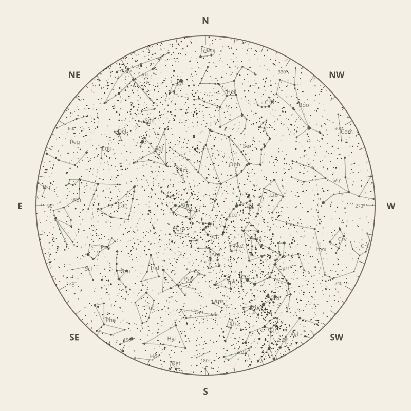

← Annual almanac
North is at the top; east is at the left. Solar System objects shown are above the horizon at 10 pm.
Monthly field almanac
July 2026
Galactic Centre viewing is best on 16 Jul 2026, from 5:37 pm to 3:27 am, reaching 89°.
- New Moon
- 15 Jul Darkest skies
- Full Moon
- 30 Jul Brightest skies
- Best dark window
- 11 Jul 12h 36m
Current conditions
Checking the sky near South East Queensland, Australia…
Sky chart: 15 Jul 2026, 10 pm
South East Queensland, Australia local time.
Show static monthly chart

Night planner
Choose a date to see astronomical darkness, Moon interference, Galactic Centre visibility, and planet altitudes and times.
Best low-Moon dark periods this month
- 5:35 pm–6:11 am12h 36m · 24% Moon
- 5:36 pm–6:11 am12h 35m · 15% Moon
- 5:36 pm–6:11 am12h 35m · 8% Moon


Galactic Centre sessions
- 5:35 pm–3:45 am10h 10m · core to 88°
- 5:36 pm–3:46 am10h 10m · core to 88°
- 5:36 pm–3:36 am10h 00m · core to 89°
Events
- HIP 97944 lunar occultation8:21 pm to 9:07 pm; Moon at 27° altitude for the first listed contact.
- HIP 98024 lunar occultation8:50 pm to 9:40 pm; Moon at 33° altitude for the first listed contact.
- Mercury stationary pointApparent motion changes direction.
July highlights
- Occultations
HIP 94643 lunar occultation
5:29 am; Moon at 24° altitude for the first listed contact.
- Comets
Comet 3D
76° altitude; magnitude 16.3.
- Planets
Saturn
Best monthly date at 59° altitude.
- Planetary events
Neptune stationary point
Apparent motion changes direction.
- Milky Way
Milky Way core window
9h 50m with 89° altitude.


Moon phases
100%
55%
1%
56%
99%
For faint deep-sky objects, observe when the Moon is below the horizon or weakly illuminated. For lunar relief, observe near the terminator; full Moon is best suited to ray systems and albedo features.
Download Moon phase CSV →

Planet visibility
Evening
- Venus22 Jul · 5:30 pm38° · Good
- Jupiter1 Jul · 5:30 pm13° · Poor
- Mercury1 Jul · 5:30 pm10° · Poor
 Venus
Venus Jupiter
Jupiter Mercury
MercuryOvernight
- Neptune31 Jul · 3:30 am62° · Excellent
 Neptune
NeptunePredawn
- Saturn3 Jul · 6:00 am59° · Excellent
- Uranus31 Jul · 6:00 am37° · Good
- Mars31 Jul · 6:00 am26° · Good
 Saturn
Saturn Uranus
Uranus Mars
Mars